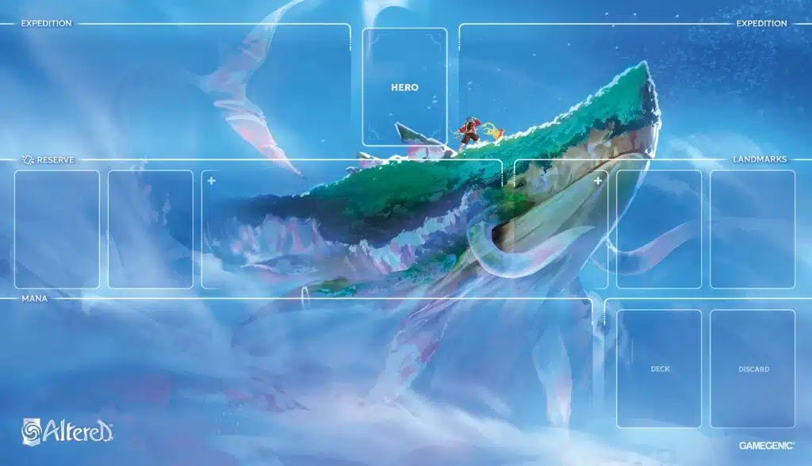

Règles rapides du jeu Altered TCG
Bienvenue dans Altered, un jeu de cartes à collectionner où vous menez deux Expéditions à travers des terres transformées par le Tumulte. Votre objectif : réunir vos deux Expéditions avant l'adversaire.
1. Présentation


Altered est un jeu de cartes à collectionner dans lequel chaque joueur·se utilise un deck dirigé par une carte Héros ou Héroïne. Plusieurs decks de démarrage sont prêts à l'emploi, mais vous pouvez les personnaliser ou créer un deck entièrement nouveau.
Aperçu du jeu
Vous menez deux Expéditions qui explorent les terres transformées par le Tumulte :
- L'Expédition Héros, menée par votre Héros/Héroïne et représentée par le marqueur Expédition Héros.
- L'Expédition Compagnon, représentée par le marqueur Expédition Compagnon.
Les Expéditions progressent l'une vers l'autre au fil de la partie. Votre objectif est de les réunir avant l'adversaire.
Les 6 factions
Chaque Héros/Héroïne appartient à l'une des six factions du jeu :


2. Matériel
Voici tous les éléments fournis dans une boîte de démarrage Altered. Cliquez sur chaque élément avec une vignette pour voir l'illustration en grand.
Pour chaque joueur

1 tapis de jeu optionnel
Recommandé pour les débutants : il aide à visualiser les différentes zones de jeu (Expédition, Héros, Réserve, Repères, Mana, Deck, Défausse).

 1 carte Héros ou Héroïne
Détermine votre faction et votre stratégie de jeu.
1 carte Héros ou Héroïne
Détermine votre faction et votre stratégie de jeu.


Pour les 2 joueurs
5 cartes Aventure
2 régions de départ (Héros et Compagnon) + 3 cartes Tumulte.


 Cartes jeton
Scarabots, soldats, etc. — créées par d'autres cartes en cours de partie.
Cartes jeton
Scarabots, soldats, etc. — créées par d'autres cartes en cours de partie.


3. Mise en place


- Mélangez les trois cartes Tumulte et alignez-les face cachée entre les deux camps opposés.
- Placez la carte région de départ Héros à une extrémité de la ligne et la carte région de départ Compagnon à l'autre extrémité.
- Chacun·e place son marqueur Expédition Héros et son marqueur Expédition Compagnon sur les régions de départ correspondantes.
- Installez les deux tapis de jeu face à face de chaque côté du Tumulte.
- Chaque joueur·se place sa carte Héros ou Héroïne dans la zone Héros du tapis de jeu.
- Déterminez au hasard qui commencera la partie, et placez le marqueur Premier Joueur sur sa carte Héros/Héroïne.
- Chaque joueur·se mélange sondeck et le place face cachée dans la zone Deck.
- Gardez le reste des cartes jeton et marqueurs à portée de main.
Main de départ
Piochez 6 cartes dans votre deck, puis choisissez-en 3 que vous placez dans votre zone de Mana, face cachée et redressées. Les trois autres cartes constituent votre main de départ.
Orbes de Mana
- Les cartes dans la zone de Mana sont toujours face cachée et sont appelées Orbes de Mana.
- Chaque Orbe de Mana donne 1 Mana lorsqu'il est épuisé.
- Redressez tous vos Orbes de Mana pendant la phase Matin.
- Une carte face cachée dans la zone de Mana y reste jusqu'à la fin de la partie.
4. Détail d'une carte
 A
B
C
D
E
F
G
H
I
A
B
C
D
E
F
G
H
I
Il y a 4 types de cartes : Héros / Héroïnes, Personnages, Sorts et Permanents.
Sur toutes les cartes
- A — Nom de la carte
- B — Type et sous-type(s)
- C — Faction : il existe 6 factions différentes
- D — Coût de Main : le coût en Mana lorsque la carte est jouée depuis votre main
- E — Coût de Réserve : le coût en Mana lorsqu'elle est jouée depuis la Réserve
- F — Capacités : les règles spéciales de la carte
- G — Capacité de Soutien : capacité utilisable depuis la Réserve, présente sur certaines cartes
Sur les cartes Personnage uniquement
H — Les Personnages ont des statistiques correspondant aux trois terrains :
 Forêt
Forêt
 Montagne
Montagne
 Eau
Eau
I — Capacités selon l'origine
Les cartes ont divers effets selon l'endroit depuis lequel elles sont jouées :
5. Les zones de jeu
Le tapis de jeu présente plusieurs zones, chacune avec un rôle précis pendant la partie. Voici un aperçu de ces zones : cliquez sur les numéros du tapis pour aller à la description correspondante.
C'est là que vous placez votre carte Héros ou Héroïne au début de la partie. Cette carte y reste pendant toute la partie et peut être utilisée pour activer sa capacité spéciale.
En début de partie, le marqueur Premier Joueur est posé sur la carte Héros du joueur qui commence.
Deux zones, une pour l'Expédition Héros et une pour l'Expédition Compagnon. Lorsque vous jouez un Personnage, vous choisissez dans quelle Expédition le placer.
Les Personnages présents dans ces zones contribuent aux statistiques de l'Expédition au Crépuscule pour faire avancer le marqueur Expédition correspondant.
Une zone face visible qui fonctionne comme une deuxième main. Les Personnages qui se reposent à la Nuit y arrivent, et les Sorts joués y sont envoyés après résolution.
Une carte en Réserve peut être rejouée en payant son Coût de Réserve, mais gagne alors Fugace. En phase Nuit, la Réserve est nettoyée pour n'y conserver que 2 cartes.
La zone où sont placés les Permanents de Repère. Contrairement aux Personnages, les Permanents restent en jeu d'un Jour à l'autre et continuent de produire leurs effets.
En phase Nuit, la zone des Repères est elle aussi nettoyée pour ne conserver que 2 Permanents.
La zone où sont placées les cartes utilisées comme Orbes de Mana. Une carte mise en Mana y reste face cachée jusqu'à la fin de la partie.
Chaque Orbe de Mana fournit 1 Mana lorsqu'il est épuisé. Tous vos Orbes sont redressés pendant la phase Matin.
Votre pioche, face cachée. Vous y piochez vos cartes au début de chaque Jour.
Si votre Deck est vide et que vous devez piocher, mélangez votre Défausse : elle devient votre nouveau Deck.
Les cartes mises de côté en cours de partie : Personnages défaussés depuis la Réserve ou les Expéditions, Sorts Fugaces résolus, cartes excédentaires de la Réserve nettoyée à la Nuit, etc.
La Défausse est une zone face visible : vous pouvez la consulter à tout moment.
6. Un jour d'exploration
Une partie d'Altered se joue en plusieurs manches appelées Jours. Chaque Jour est composé de cinq phases :
 Phase 1 — Matin
Phase 1 — Matin
S'il s'agit du premier Jour de la partie, passez directement à la phase Midi. Sinon, suivez ces étapes :
- Placez le marqueur Premier Joueur dans l'autre camp.
- Redressez vos Orbes de Mana et vos cartes épuisées.
- Piochez deux cartes dans votre deck.
- En commençant par le camp possédant le marqueur Premier Joueur, chaque joueur·se choisit de placer ou non une carte de sa main dans sa zone de Mana.
 Phase 2 — Midi
Phase 2 — Midi
Activez toutes les cartes en jeu avec un effet « À Midi ».
 Phase 3 — Après-midi
Phase 3 — Après-midi
En commençant par le détenteur du marqueur Premier Joueur, les deux camps jouent chacun leur tour, une carte à la fois.
Structure d'un tour
Actions rapides
Il existe deux types d'actions rapides :
- Capacité d'épuisement : présente sur certaines cartes Permanent ou Héros. Épuisez la carte pour activer son effet.
- Capacité de Soutien : utilisable si la carte se trouve en Réserve. Pour l'activer, défaussez la carte depuis votre Réserve.
Jouer une carte
Pour jouer une carte, vous devez épuiser le nombre d'Orbes de Mana correspondant à son coût.
- Jouer un Personnage : vous décidez dans quelle Expédition le placer (Héros ou Compagnon).
- Jouer un Sort ou un Permanent : voir Types de cartes.
- Jouer une carte depuis la Réserve : voir La Réserve.

Passer
Si vous ne pouvez pas ou ne souhaitez pas jouer de carte, vous pouvez passer. Vous ne pourrez alors plus jouer de tours jusqu'à la prochaine phase d'Après-midi. Quand vous passez, l'adversaire peut continuer à jouer. Une fois qu'il ou elle a également passé, la phase Crépuscule commence.
 Phase 4 — Crépuscule
Phase 4 — Crépuscule
Pendant le Crépuscule, les deux camps comparent les statistiques des Personnages en jeu pour déterminer quels marqueurs Expédition peuvent avancer.
En commençant par une Expédition (Héros ou Compagnon), effectuez les étapes suivantes :
)
de la région où se trouve votre marqueur.Procédez ensuite de la même manière pour l'Expédition restante. L'adversaire fait de même pour ses Expéditions.
- Votre total doit être supérieur à 0 pour pouvoir avancer.
- Les Personnages Endormis
 ne sont pas pris en compte dans le calcul des statistiques.
ne sont pas pris en compte dans le calcul des statistiques. - Chaque Expédition ne peut avancer qu'une seule fois par phase Crépuscule.
- Quand une Expédition se déplace sur une carte Tumulte face cachée, retournez-la face visible.
- Vous comparez toujours votre Expédition Héros avec l'Expédition Héros adverse, même si les deux marqueurs ne sont pas dans la même région. Idem pour les Compagnons.
Exemple — Pierre vs Noémie


Noémie ne peut donc pas avancer grâce à
Montagne
mais peut empêcher Pierre d'y avancer.
B On additionne ensuite les statistiques de chaque Expédition pour chacun de ces terrains :
| Terrain | Pierre | Noémie | Résultat |
|---|---|---|---|
| Forêt |
3 | 1+1 = 2 | ✓ Pierre dépasse en Forêt |
| Montagne |
3 | 3+1 = 4 | ✕ Noémie bloque Pierre |
| Eau |
3 | 3+1 = 4 | ✓ Noémie dépasse en Eau |
C Comme son total en Forêt dépasse celui de Noémie, le marqueur de Pierre avance. De son côté, comme son total en Eau dépasse celui de Pierre, le marqueur de Noémie avance également. Les deux joueurs progressent sur leur Expédition Héros ce Jour.
 Phase 5 — Nuit
Phase 5 — Nuit


Repos
Envoyez tous les Personnages de vos Expéditions dans votre Réserve.
- S'ils sont Fugaces, défaussez-les à la place.
- Les marqueurs
 Boost sont retirés de la carte avant qu'elle ne rejoigne la Réserve.
Boost sont retirés de la carte avant qu'elle ne rejoigne la Réserve. - Les cartes portant un marqueur Endormi ou
 Ancré ne vont pas en Réserve : elles perdent leur marqueur Endormi/Ancré à la place et restent en Expédition.
Ancré ne vont pas en Réserve : elles perdent leur marqueur Endormi/Ancré à la place et restent en Expédition.
Nettoyage
- Si vous avez 3 cartes ou plus dans votre Réserve, défaussez l'excédent pour ne conserver que 2 cartes de votre choix.
- De même, sacrifiez les cartes de vos Repères pour n'en garder que 2.
Vérifiez la victoire
Voir Fin de la partie.
7. La Réserve
La Réserve est une zone face visible qui fonctionne comme une deuxième main.
Jouer une carte depuis la Réserve
Une carte dans votre Réserve peut être jouée comme si elle était dans votre main, à deux différences près :
- Vous devez payer son Coût de Réserve au lieu de son Coût de Main.
- Une carte jouée depuis la Réserve gagne Fugace (sauf s'il s'agit d'un Permanent de Repère).
Fugace
Si une carte Fugace devait être normalement envoyée dans la Réserve, défaussez-la à la place. Pour les Personnages : placez un marqueur Fugace sur le Personnage pour vous en rappeler.
Une carte portant la mention « Défaussez un Personnage ciblé » ne peut pas cibler un Personnage dans la Réserve, mais une carte portant la mention « Défaussez une carte ciblée dans une Réserve » le peut.
8. Autres types de cartes
Sorts

Lorsque vous jouez un Sort, résolvez tous ses effets, puis envoyez-le immédiatement dans votre Réserve. Si vous jouez un Sort depuis votre Réserve, il gagne Fugace : défaussez-le après la résolution.
Permanents Repères

Lorsque vous jouez un Permanent Repère, placez-le dans votre zone Repère. Il ne retourne en Réserve que si un effet de jeu l'indique.
Permanents d'Expédition

Lorsque vous jouez un Permanent d'Expédition, placez-le dans une de vos Expédition. Au repos, contrairement à un Personnage, un Permanent d'Expédition part en Réserve que si vous avez avancé sur cette Expédition.
9. Fin de la partie
Le premier qui parvient à réunir son Expédition Héros et son Expédition Compagnon gagne la partie à la fin du Jour.
En cas d'égalité
Si les marqueurs des deux adversaires se sont rejoints le même Jour, vérifiez d'abord si l'un d'eux a avancé plus que nécessaire. Si c'est le cas pour l'un et non pour l'autre, celui qui l'a fait gagne la partie.
L'Arène — départage ultime

Dans le cas contraire, jouez un Jour supplémentaire dans l'Arène pour les départager. L'Arène se trouve au dos de la carte région de départ Compagnon : posez-la au centre de la table, placez-y les marqueurs Expédition des deux camps, et retirez du jeu les autres cartes Aventure.
Puis, jouez un Jour normalement. Au Crépuscule, pour chaque terrain de l'Arène
(
),
additionnez les statistiques des Personnages de vos deux Expéditions.
Comparez les trois totaux avec ceux de l'adversaire : celui ou celle qui l'emporte
dans le plus grand nombre de terrains gagne.
Si les deux camps sont de nouveau à égalité, recommencez un nouveau Jour dans l'Arène.
10. Règles supplémentaires
Capacités des cartes
Si les capacités d'une carte contredisent les règles générales, suivez ce qui est écrit sur la carte.
Cibler
Les capacités des cartes ciblent par défaut les cartes en jeu : Personnages dans une Expédition ou Permanents dans la zone des Repères.
Les cartes dans la Réserve ne sont pas contrôlées et ne peuvent être ciblées que par une capacité mentionnant explicitement la Réserve.
Plus de cartes dans votre deck ?
À Midi uniquement, si votre deck est vide, mélangez votre défausse, qui devient alors votre nouveau deck. Ensuite, piochez le nombre de cartes nécessaire.
Permanent depuis la Réserve
Si vous jouez un Permanent de Repère depuis la Réserve, payez son Coût de Réserve. Il ne gagne pas Fugace.
« À Midi », « Au Crépuscule », « À la Tombée de la Nuit »
Ces capacités se déclenchent au début de leur phase respective. Le camp détenant le marqueur Premier Joueur résout les siennes en premier, dans l'ordre de son choix.
« Je » dans les capacités
Les cartes utilisent « je » pour se désigner elles-mêmes. Par exemple, « Je gagne 2 boosts » signifie « Cette carte gagne 2 boosts ».
Capacité de Soutien
Une capacité de Soutien se déclenche uniquement lorsque vous défaussez la carte en action rapide, pas si la carte est défaussée pour une autre raison (par exemple si vous avez trop de cartes en Réserve pendant la Nuit).
Cartes jetons
Les cartes jetons ne démarrent pas dans votre deck mais sont créés par d'autres cartes.
Lorsqu'un jeton quitte la zone associée, il est retiré du jeu, même si une carte vous dit d'en faire autre chose !
11. Marqueurs & icônes
Marqueurs de jeu
Retirés quand le Personnage quitte les Expéditions.

Retirés quand le Personnage quitte les Expéditions.
Icônes des cartes
Terrains
12. Construction de deck
Après avoir découvert le deck de démarrage, il est temps de construire votre propre deck !
Votre deck doit inclure 40 à 60 cartes de la même faction, dont une carte Héros ou Héroïne, et respecter les contraintes suivantes :